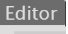
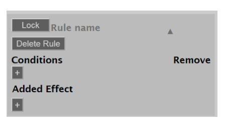
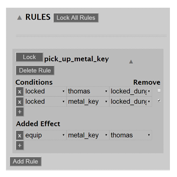
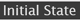
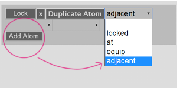
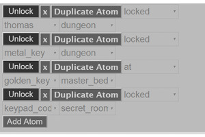

Welcome to the Ceptre Editor Walkthrough!
In this page we will be making a simple project so that you can learn how the Ceptre Editor works.
This steps will be in chronological order, however you can always experiment with how you are most
comfortable with.
Let's begin!
To start with, have a concept already in your mind.
Usually this would mean to have an idea of what you want the player to be able to do; the objects,
locations, characters and, if necessary, a map of your world.
However, trial and error is always an option, especially if you are not familiar with Ceptre.
For this case we are going to make a map in which the main character "Thomas" is trying to escape a
castle by collecting some items.
In this rough concept we already have an idea of what the rules of this world will be:
Thomas will only be able to move from one room to another if the rooms are beside each other and if
the
entrance is open.
We also know which items are needed to be able to advance in the "game", where they are and where
they
will be needed.
Finally, we also know what the goal is: Escape the castle.
Now we will add the elements we saw in the concept into the project.
To start with, Navigate to the Editor Tab of the Ceptre Editor
[]
and locate the Sets.
Select the option to Add a New Set, a dialogue box will appear from the website which will allow you
to
name it [Note: You cannot add spaces to your names so use the "_" to avoid confusion.]
A Set is just a group of elements that share or will share a common characteristic or behaviour,
think of it like
semantic fields.
To start with this example we will make a Set named "elements."
In this Set we will add Thomas and the items (The metal key, the golden key and the kepad code).
It isn't imperative that you put them together, however in the next sections it will save us time
since
the way that they "behave" is very similar. The items will only need to exist within the rooms and
be
able to interact with Thomas.
We will also add another two Sets called "rooms" and "trapped."
"Rooms" are all the rooms that Thomas will be able to move back and forth as well as interact with
the
items in them:
"hallway", "home_library", "master_bedroom", "main_room", "road_home."
"Trapped" will be used for rooms that Thomas can't interact with until they can use the respective
key:
"dungeon" and "secret room".
Next we will add the Predicates.
In simple terms a Predicate are states that can exist in your world, they can be composed of
"arguments", which are Sets that are involved in said state, and usually indicate how an element
will
interact with another one. Otherwise it can be an state that exists on it's own.
In this example we have 4 Predicates:
Now we will be adding the rules in which our world will be working on.
First, navigate to the "Add rule" button and select it. A new menu should appear.
After that select the "+" to Add a New condition or effect.

The way rules work are as follows:
* There are some conditions that need to be fulfilled before a Rule can be fired (Executed). *
* Conditions are Predicates and need to be organized in a certain way to make the rule
applicable. *
* The conditions can disappear after the rule is fired, but this isn't mandatory.
To delete a condition you only need to check the box under remove *
* Rule must have at least one effect. *
* You can create variables in the Conditions, but you can't in the Effects.
However you can use variables created in Conditions in your Effects. *
For this example we will be making 8 rules. In reality it is very unlikely that you will be able to
know
the exact number of rules that you will be needed, which is when the Trial and Error method will
most
likely be the most useful.
Since the "game" will begin with Thomas being locked up in the "locked_dungeon", it would be
best to
make the rules in the order the player will most likey need them.
As we saw in the map during Step 1, we know that there is a jey Thomas will need to escape the
dungeon, so we'll start with that.

Now we will be moving to the Initial State Tab [].
The Initial State is the state of execution your program will begin in.
In this example you only have to think of it in two ways:
With that in mind we will start by making the map.
Bringing back the concept we saw in Step 1 and the predicate "Adjacent" we saw in Step 3:
We know which rooms we want to be adjacent to each other, so now we only need to add them into the
program.

We'll start by adding the adjacent rooms.
Since we already have some rules to move into certain places (Locked rooms and the exit) we do not
have to add them here; however we do need
to add the rest of the rooms since the rule that applies to them uses variables (The Move rule).
First we'll select the button "Add Atom."
An atom is just the predicate that we will be using for the Initial State.
For this whole step we will be using the "Adjacent" predicate.
Next we will insert the arguments:
We will essentially be repeating this process until the rooms we want to be adjacent are all filled
in.
At the end we should have:
Similarly to the last step we will be putting all the elements in their place, however we know that
we will be able to change their original states (In this case just change their position).
Thankfully we will not have to add anything new to this and can just add the atoms the same way we
had in the previous step.

At the end we should have:
Now we can finally start our prototype and see if it works.
The first thing we need to do is click on "Start Execution", because otherwise the fireable rules
won't appear in the box in the Execution tab.
Once we start the execution, we will also be able to see the atoms that we coded before in the
States box.
After you select a rule we have to click the button "Execution" in order to fire it.
Once you fire it the next information will appear in the States window:
- The rule that was executed.
- The conditions that were in place, which allowed the rule to be fired.
- The new effects or the arguments that will appear in the new state.
- And, finally, the new state.
Now, while we are testing the prototype you should know about Quiescence.
Quiescence means that there are no more rules fireable, which could mean 1 of 3 things:
Execute to Quiescence is a useful tool because it picks random action paths until it reaches, as the
name says, Quiescence. Since it is random and not logical, the tools allows us to find any
Quiescence
states that we don't want there to be or else it will give us the end states that we are looking
for.
Conversely, we don't always need Quiescence. Some games could go on infinitely, like
simulation
games that you can repreat tasks and don't really have an end goal.
In these cases we don't want there to be any Quiescence. However the button is not as useful
because, at
the moment of this walkthrough, the website crashes if you click Execute to Quiescence in a game you
don't want one there to be.
To navigate through this we could make a false state that would create Quiescence and get rid of it
when finishing the prototype or we can just avoid
using this button.
Lastly, we can just set an specific amount of Executions we want there to be and, just like the
Execute to Quiescence, it will randomly follow a path, except it will just stop when it reaches the
selected amount.
This could also be used to avoid the issue of finding Quiescence in a game that should have none
from before, as we can just select a high amount of actions we want and if it doesn't reach
Quiescence the likelyhoods of there being any decrease dramatically.